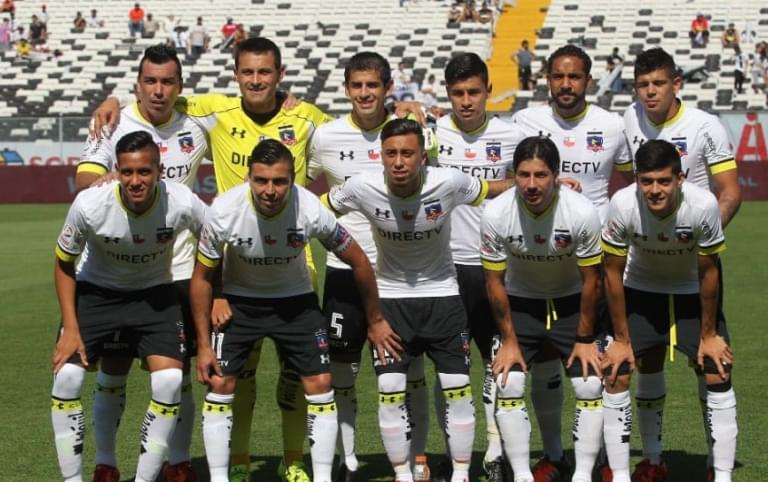
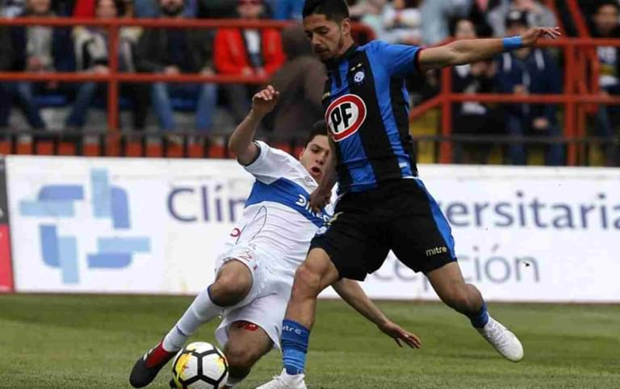

La selección chilena ha tomado la primera posición en el ranking de fútbol de la FIFA, gracias a sus excelentes actuaciones en los últimos partidos.
Un joven talento de Chile ha dado un gran salto
Martina Navarro, una delantera de 18 años, ha mostrado un gran rendimiento y ya está entre las 10 máximas goleadoras de la Premier League chilena.

Ranking de clubes de la Premier League de Chile
Colo-Colo ocupa el primer lugar con el ranking más alto, gracias a sus recientes victorias y al excelente desempeño del equipo.

Un duelo candente entre eternos rivales
Universidad Católica y Unión Espanyola protagonizaron un emocionante partido que resultó ser uno de los más interesantes del fútbol chileno esta temporada.
Futbolista chileno conquista Europa
Matías Fernández, mediocampista de la Universidad de Chile, ha firmado contrato con el famoso club español Valencia. Esto introduce el fútbol chileno a una audiencia aún mayor.
Nuevo entrenador en jefe de la selección de Chile
Luego de la renuncia del anterior entrenador, el nuevo entrenador en jefe de la selección de fútbol de Chile es un conocido ex futbolista y entrenador que promete traer nuevas tácticas y estrategias para tomar la delantera. equipo nacional al más alto nivel.